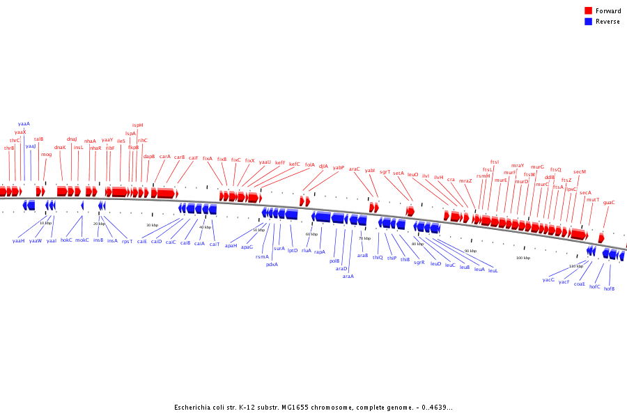

This is a fully expanded view.
Displayed PNG file size: 59 kb; SVG file size: 171 kb.
Valid XHTML 1.0; Valid CSS.
Centered on base 60,000; Zoom = 36.
![[Expand -]](includes/expand_out.png)
![[Expand +]](includes/expand_in_g.png)
![[Full view]](includes/full.png)
![[Rotate -]](includes/move_back.png)
![[Rotate +]](includes/move_forward.png)
![[View as SVG]](includes/as_svg.png)
![[Help]](includes/help.png)